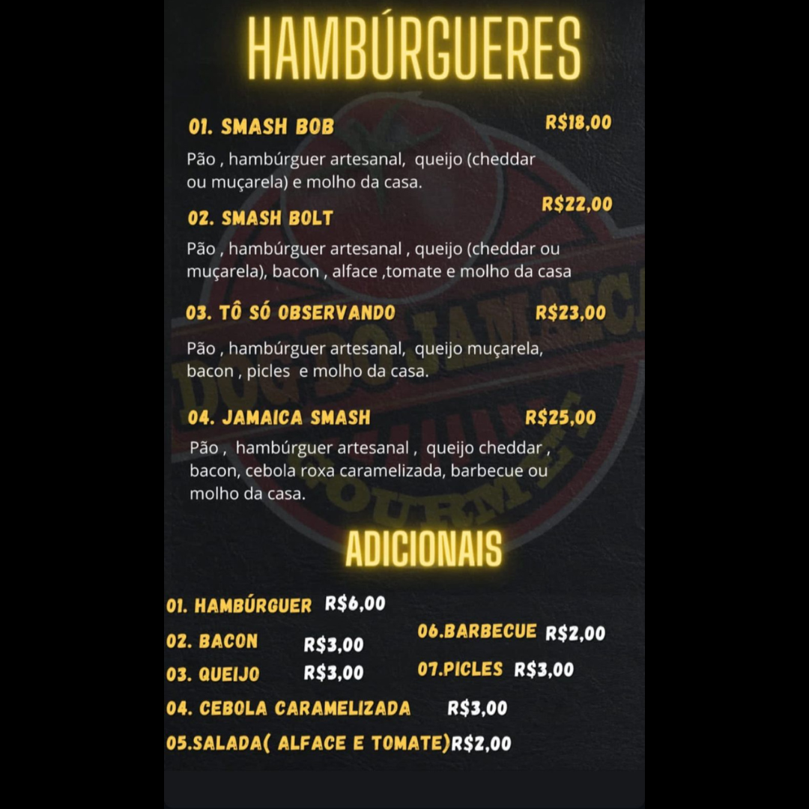

sobre mim
O PREPARO DE UM CACHORRO-QUENTE ARTESANAL É UMA VERDADEIRA ARTE CULINARIA QUE COMBINA INGREDIENTES FRESCO E TÉCNICAS CUIDADOSAS, ADICIONA-SE MOLHO DE TOMATE, MOSTARDA, MAIONESE E UMA VARIEDADE DE ACOMPANHAMENTOS. CADA ELEMENTO É COLOCADO COM PRECISÃO PARA GARANTIR UMA EXPLOSÃO DE SABORES A CADA MORDIDA...
TEMOS TAMBÉM NOSSOS HAMBÚRGUER ARTESANAL, É UMA CELEBRAÇÃO DE SABORES E TEXTURAS, ONDE CADA DETALHE É CUIDADOSAMENTE PENSADO. COMEÇA COM A ESCOLHA DE CARNES FRESCAS E BEM TEMPERADAS, QUE SÃO MOLDADAS EM HAMBÚRGUERES SUCULENTOS E GRELHADOS AO PONTO PERFEITO. O PÃO, LEVEMENTE TOSTADO, SERVE COMO A BASE IDEAL, ENQUANTO OS MOLHOS CASEIROS, COMO MAIONESE, KETCHUP E MOSTARDA, SÃO ADICIONADOS PARA INTENSIFICAR O SABOR. COMPLEMENTAM A MONTAGEM INGREDIENTES FRESCOS COMO ALFACE CROSTANTE, TOMATE SUCULENTO E CEBOLA CARAMELIZADA, CADA UM COLOCADO COM PRECISÃO PARA GARANTIR UMA COMBINAÇÃO EQUILIBRADA...
Menu
CARDÁPIO
Contato
ENTRE EM CONTATO CONOSCO PELO NOSSO WHATSAPP (61) 99205- 3752 OU CLIQUE EM UM DOS NOSSO LINKS ABAIXO E VENHA CONHECER O NOSSO DOG.